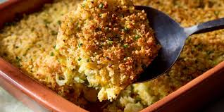

Shredded Zucchinni Casserole Recipe

Description
Prepare your own shreddded zucchini casserole in under 30mins and enjoy.
Ingredients
- 8 cups coarsely shreddded zucchinni
- 1 tablespoon olive oil
- 1/2 teaspoon salt
- 4 cloves garlic,minced
- 1 cup finely chopped onion
- 4 large eggs
- 1/2 teaspoon freshly ground black pepper
- 1 1/2 cups shreddded mozzarella cheese
- 1 1/2 cups shreddded sharp Cheddar cheese
- 2/3 cup Italian-saesoned panko bread crumbs
- 3 tablespoons melted butter
- 3/4 cup grated Parmesan cheese, divided
- chopped chives to taste, for garnish
Steps
- Gather all ingredients. Preheat the oven 190 degrees C. Lightly grease a 2-quart rectangular baking dish.
- Combine zucchini and salt in a large bowl and toss to coat evenly. Transfer zucchini to a colander set in the sink. Let stand to drain excess moisture, 15 minutes. Transfer zucchini to a clean kitchen towel and squeeze out any remaining liquid. Use paper towels to wipe the large bowl dry.
- Heat oil in a large skillet over medium heat. Add onion and cook until soft and translucent, about 4 minutes. Add garlic and cook until fragrant, 1 minute more.
- Whisk together eggs and pepper in the large bowl. Add zucchini, onion mixture, mozzarella, Cheddar, and 1/2 cup of the Parmesan cheese; combine thoroughly.
- Transfer mixtrure to the prepared baking dish and spread into an even layer
- Bake, uncovered, for 20minutes
- Meanwhile, combine panko and melted butter in a small bowl. Stir in remaining 1/4 cup Parmesan cheese.
- Top casserole with breadcrumb mixture and bake until golden and crisp, 10 to 15 minutes. Garnish with chives.
Final Notes
The above above is a recipe of 8 servings with a nutritional value of 368 calories per serving
Home page